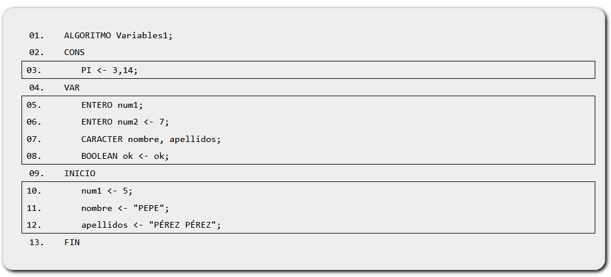

Elementos comunes a todos los lenguajes
Tipos de datos
Los principales tipos de datos usados en los lenguajes de programación son:
- Carácter: para almacenar caracteres y cadenas de texto.
- Lógicos o booleanos: del tipo Verdadero/Falso.
- Numéricos: almacenan números sin decimales (ENTERO) o con decimales (REAL).
Constantes y variables
En cualquier lenguaje de programación necesitaremos usar variables y constantes para almacenar determinados valores (los cuales se guardan internamente en una posición de memoria del ordenador) y así poderlos recuperar posteriormente para usarlos en otra parte del código fuente.
Las constantes generalmente se declaran al principio del programa (bloque de declaración), escribiendo su nombre en mayúsculas, y la diferencia entre ellas es que a las constantes se les puede asignar su valor una sola vez, mientras que el valor de las variables puede ser modificado en cualquier punto del código fuente del programa.
Para usar una variable o constante en primer lugar es preciso declararla (crearla) antes de poder inicializarla (darle un valor), pudiéndose hacer ambas cosas en la misma línea del código fuente.
En cuanto al ámbito de una variable, éstas pueden ser variables globales (es posible acceder a ellas desde cualquier parte del programa) o variables locales (son visibles sólo desde determinadas partes de él): así pues, las creadas dentro de una Función, Procedimiento o sentencia de control existen y son accesibles sólo dentro de dicha porción de código fuente.
A continuación veamos un ejemplo de cómo declarar variables y declarar constantes en pseudocódigo:

Explicación...
- Dentro de CONST declaramos (creamos) la constante 'PI' y la inicializamos (le damos un valor). No es necesario indicar un tipo de datos.
- A continuación, dentro de VAR declaramos varias variables de diferentes tipos de datos: a las de la primera y tercera líneas les asignamos un valor dentro del programa en sí (entre INICIO y FIN), mientras que las que se encuentran en la segunda y cuarta líneas las inicializamos en la misma línea en que las creamos.
Operadores
A continuación, listamos los principales tipos de operadores, teniendo en cuenta que para evaluar una expresión primero se calcula el resultado de lo que se halle entre paréntesis (comenzando desde los más interiores):
- Aritméticos unarios
- Incremento (+1): ++
- Decremento (-1): --
- Aritméticos binarios
- Multiplicación: *
- División: /
- Resto: % , MOD
- Suma: +
- Resta: -
- Relacionales
- Menor que: <
- Mayor que: >
- Menor o igual a: <=
- Mayor o igual a: >=
- Igual a: ==
- Diferente de: <> ò !=
- Lógicos
- Negación: NOT (!)
- Conjunción: AND (&&) y
- Disyunción: OR (||) o
- Asignación
- Suma y asignación: +=
- Resta y asignación: -=
- Multiplicación y asignación: *=
- División y asignación: /=
- Módulo (resto) y asignación: %=
NOTA: Deberemos tener en cuenta que dentro de los distintos lenguajes de programación existentes puede que estos operadores genéricos tengan alguna diferencia a la hora de escribirlos en el código fuente.